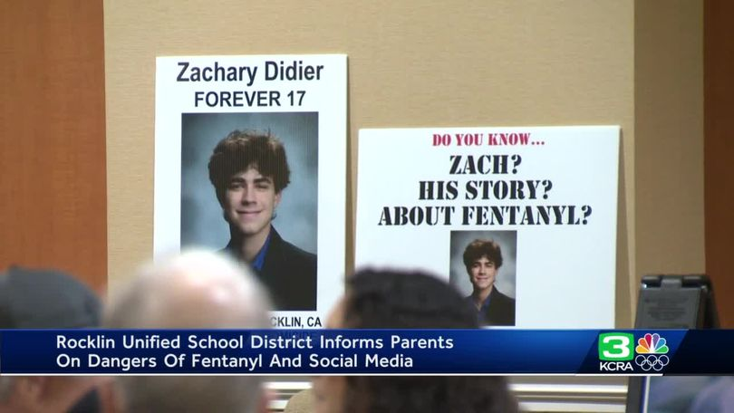

STORIES

Three fatal doses of what the victims thought was cocaine. It turns out, it was cocaine laced with fentanyl
Amanda Scher, Julia Ghahramani, Ross Mtangi - 2021
Brenda's journey through prescribed opioids led to severe misuse and addiction. With support of her family she has been in recovery for two years.
Brenda's Recovery - 2017

Zach purchased what he was told percocet, but instead was sold a counterfeit pill
Zach Didier-2020